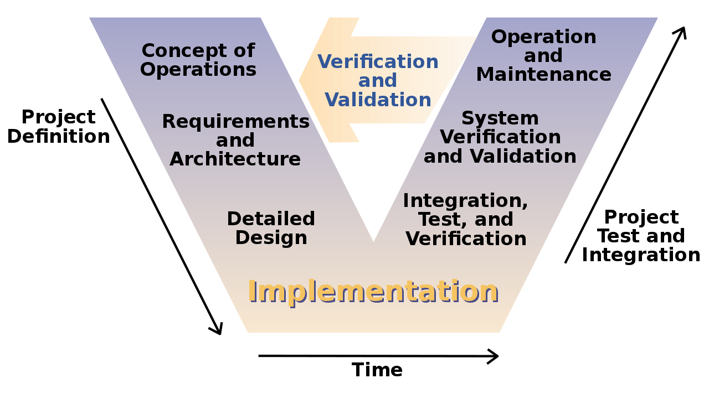

Koskmudel ehk tuntud ka kui klassikaline ehk jadamudel
(Waterfall model, classic life cycle)
Kirjeldas Winston W. Royce aastal 1970
Jadamisi kulgevat protsessi kirjeldav mudel,
tugineb tavalises tootearenduses kasutusel
olnud protsessimudelile (inseneriteadus).Ühe etapi töö
tehakse korraga ära ja
liigutakse uude etappi.
Koskmudel on sobilik suurtele süsteemidele, mida arendatakse mitmes erinevas kohas korraga.
Sel juhul lubab eelnev korralik planeerimine töid paremini koordineerida
Põhiidee kohaselt jagatakse tegevused nii, et iga tegevus toimub jadamisi eraldi etapina.
Royce jagas protsessi järgmisteks põhietappideks:
1. Nõuete määratlemine.
2. Süsteemi ja tarkvara kavandamine.
3. Teostus ja moodulite testimine.
4. Integratsioon ja süsteemi testimine.
5.. Kasutamine ja hooldus
Iga faasi tulemiks on üks või mitu dokumenti, mis kinnitatakse.
Järgmine faas ei tohiks alata enne, kui eelmine on lõpetatud.
Faasidel on teatav ülekate ja info edastamine ühest teise.
V-mudel, mis on koskmudeli alaliik, tekkis tõenäoliselt 1960.aastatel,
kuigi otsest viidet algallikale ei ole. V-mudeli põhirõhk on tarkvara
kirjutamisele ja testimisele võrdse kaalu omistamine. Antud mudelit peetakse
tüüpilise koskmudeli laienduseks. Seal kasutatakse koskmudelis välja toodud
faaside vahel samu seoseid, kuid n-ö lineaarse langemise asemel liigub V-mudel
esmalt diagonaalselt alla ning võtab pärast tarkvara kirjutamise etappi taas suuna
üles (moodustub v-tähe kuju).

Mudeli kuju iseloomustab erinevate etappide vahelisi seoseid.
Mudelis soovitatakse dokumenteerida ka testimine. Iga testi jaoks tuleks
koostada rakendusplaan juba mõnes varasemas etapis ehk mitte oodata arenduse
lõpule jõudmist, et see siis testijatele üle anda.
Võrreldes agiilse tarkvaraarenduse metoodikaga, saab V-mudeli tööversioon
valmis oluliselt aeglasemalt. Tegemist on üsna jäiga ja vähem paindliku
arendusmudeliga, millele eelistatakse pigem agiilset metoodikat.
Kuigi paljud peavad iteratiivset ja järkjärgulist arendust kaasaegseks
praktikaks, pärineb selle rakendamine juba 1950. aastate keskpaigast.
Iga järgneva kümnendi silmapaistvad tarkvarainseneri mõtteliidrid toetasid
IID tavasid ja paljud suured projektid kasutasid neid edukalt. Need tavad
võisid oma üksikasjade poolest erineda, kuid kõigil oli ühine teema – vältida
ühekäigulist järjestikust, dokumendipõhist ja piiratud sammuga lähenemist.
Ian Sommerville järgi on iteratiivne arendusmudel pigem üldine nimetus mitmele
nn hübriidmudelile (sh inkrementaal- ja spiraalmudel). Sõna "iteratiivne" rõhutab,
et tegevused selles mudelis korduvad.
Inkrementaalne arendus on etapiviisiline ja ajagraafikut järgiv strateegia,
kus süsteemi osi arendatakse nii erinevatel aegadel kui erineva kiirusega. Konkreetse
osa valmides integreeritakse see süsteemiga. Selle suureks eeliseks on tõik, et arendajad
ja tulevased süsteemi kasutajad saavad varajastest iteratsioonidest õppida ning vajalikku
tagasisidet veel siis, kui võimalik teha muudatusi (näiteks muuta süsteemi arhitektuuri
kogu koodi ümber kirjutamata).
Alternatiivne strateegia oleks kodeerida kõik süsteemi osad ja siis kogu kood ühekorraga
integreerida.
Iteratiivne arendus on n-ö muutmisstrateegia, kus nähakse ette olemasolevate
süsteemi osade ümbertegemine ja parandamine.
Alternatiivne strateegia oleks planeerida tegevused selliselt, et kõik tehtaks õigesti
esimesel katsel.
Inkrementaalse arenduse eelised:
Aitab kokku hoida kulusid, mis võivad tekkida kasutaja nõuete muutmise tõttu.
Võrreldes koskmudeliga väheneb ka uuesti tehtava analüüsi ja dokumentatsiooni hulk.
Kergem ja kiirem tagasiside kliendilt, kes saab anda kommentaare juba valminud osadele.
Tarkvara võib jõuda kliendini kiiremini ja varem kui nt koskmudeliga.
Inkrementaalse arendused probleemid:
Progress ei ole hästi jälgitav - haldurid vajavad progressi mõõtmiseks pidevalt materjale.
Kiire arenduse korral ei ole tasuv tekitada dokumente iga pisikese versioonimuudatuse jaoks.
Süsteemi struktuur kipub uute osade lisandumisel halvenema - pidev muutmine rikub süsteemi
struktuuri. Halb struktuur muudab tarkvara hilisema muutmise keerulisemaks ja kulukamaks.
Prototüüp on süsteemi algne versioon, mida kasutatakse disainivõimaluste katsetamiseks ning ideede demonstreerimiseks.
John Crinnion kirjeldas oma 1992. aastal avaldatud raamatus „Evolutionary Systems Development“ Systemscrafti prototüübi metoodikana, mida tuleks muuta ja kohandada, et see sobiks konkreetse keskkonnaga, milles seda rakendati.
Prototüüpe saab kasutada erinevates arenduse faasides. Näiteks nõuete analüüsietapil nende leidmiseks ja valideerimiseks; disainietapil valikuvõimaluste uurimiseks ning kasutajaliidese kavandamiseks.
Kasu prototüüpimisest: parem süsteemi kasutusmugavus, täpsem ühildumine kasutaja tegelike vajadustega; parem kvaliteet ja hooldatavus ning väiksem vaev arendamisel.
Joonis 1-4 Prototüübi loomise protsess
Prototüüpimise etapid on järgmised:
Nõuete kogumine. Tehakse üldistatult, samas fikseerides teemasid, mida soovitakse hiljem täpsustada.
Kiire kavandamine. Keskendutakse nähtavale osale (sisend, väljund, vormid jms), mille tulemuseks on prototüüp. Klient saab selle alusel oma soove täpsustada.
Järgneb iteratsioon prototüübi parandamiseks, kuni see vastab kasutaja nõudmistele.
Prototüübi arendamisel on oluline, et see saaks loodud kiiresti, kasutades selleks abivahendeid (kiire prototüüpimise keeled ja tööriistad). Prototüüp ei pea sisaldama kogu funktsionaalsust - peab keskenduma sellele, millest ei ole hästi aru saadud; prototüübis ei pea olema vigade kontrolli ning see on suunatud funktsionaalsetele nõuetele (mitte näiteks turvalisuse probleemidele).
Prototüüpimist võib teha erineval põhimõttel - näiteks ühekordne prototüüpimine (Throw away prototyping), evolutsiooniline prototüüpimine (Evolutionary prototyping), lisanduv prototüüpimine (Incremental prototyping).
Ühekordse prototüüpimise põhimõtted:
Sellised prototüübid tuleb peale loomist likvideerida, sest nad pole tegelikule süsteemile heaks baasiks - näiteks ei pruugi nende alusel täita mittefunktsionaalseid nõudeid, prototüübi struktuur ei sobi edasiseks arenduseks ega vasta ka muudele kvaliteedinõuetele.
Spiraalmudelit kirjeldas esimest korda Barry Boehm oma 1986. a artiklis.
Spiraalmudel on üks iteratiivseid arendusmudeleid. Protsessi kulgemist kujutab spiraal. Esimene kordus võib olla näiteks seotud süsteemi teostatavuse uurimisega, teine nõudmiste kirjeldamisega, järgmine kavandamisega jne. Mitu kordust on enamasti seotud tarkvara realiseerimisega, kus selle ehitamine toimub inkrementaalselt.
Spiraali korduseid ei tohi võrdsustada tavapäraste arendusprotsessi faasidega. Iga kordus on jaotatud 3 kuni 6 sektorisse (erinevad autorid jagavad erinevalt). Iga kordus algab lähima eesmärgi kavandamise ja riskide hindamisega ning lõppeb n-ö kliendiga - ehk eesmärk peab saama täidetud ja kontrollitud. Sektorite töömahukus ei pruugi olla ühesugune.
Boehm'i järgi on sektoreid neli:
1. Eesmärkide seadmine (objective setting) - määratakse korduse eesmärgid, piirangud protsessis, tulemused, juhtimisplaan, võimalikud riskid ning lähtudes riskidest ka alternatiivsed strateegiad.
2. Riskide hindamine ja maandamine (risk assessment and reduction) - iga leitud riski jaoks tehakse analüüs ja võetakse nende maandamiseks midagi ette (nt risk, et nõudmised pole adekvaatsed: tehakse prototüüp).
3. Arendus ja valideerimine (Development and validation) - valitakse arendusmudel, mis lähtub hinnatud riskidest (mudel peab olema selline, mis aitab riske vähendada nt kui kasutajaliides on suurim risk, siis võib aidata prototüüpide tegemine).
4. Planeerimine (Planning) - projekt vaadatakse üle ja tehakse otsus, kas jätkata järgmisel kordusel. Kui otsustatakse jätkata, siis tehakse plaan järgmise faasi jaoks.
Joonisel 3 on kujutatud üks näide spiraalmudelist. Tegelik arendusprotsess võib varieeruda nii iteratsioonide arvu kui ka tegevuste paigutuse osas.
Selle mudeli kõige olulisem erinevus teistest on riskidega arvestamine. Risk ehk võimalus, et midagi saab untsu minna. Riskide realiseerumise tõttu ületatakse tähtajad ja maksumus, seepärast peab riskidega arvestama ning võtma midagi ette nende maandamiseks.
Agiilsete arendusmeetodite jaoks sobib kasutada inkrementaaset mudelit. Agiilse tarkvaraarenduse levimise algus läheb 2001 aastasse, kui senise üliplaanipärase arenduse vastased kirjutasid alla "The Agile Manifesto"-le, mille kõige olulisemates punktides rõhutakse inimesele ja inimeste vahelisele suhtlemisele:
Inimesed ja suhtlemine on tähtsamad kui protsessid ja tööriistad.
Töötav tarkvara on tähtsam kui dokumentatsioon.
Koostöö kliendiga on tähtsam kui läbirääkimised lepingu üle.
Muudatussoovidele vastutulek on tähtsam kui plaani järgmine.
Enam arvestatakse tagasiside (koormustestimine, kasutajate arvamus jm) käigus saadud infoga kui loodetakse hoolika etteplaneerimise tehnikale. Põhitähelepanu on inimestel (sh kasutajatel) ja pideval testimisel. Öeldakse, et agiilmeetoditega saavutatakse sama raha eest parem tulemus, kuigi võime tarkvara funktsioonide valmimise aega on keerulisem ette planeerida.
Tuntumad ja levinumad agiilsed arendusmeetodid on ekstreemprogrammeerimine (XP), Scrum, Feature Driven Development (FDD), Open Unified Process (OpenUP) jt.